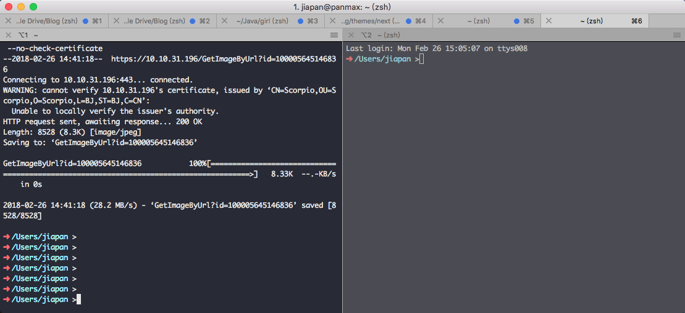

工欲善其事，必先利其器
算起来我用 Macbook 也有三年多的时间了，中间由于一次工作原因，开发环境一直有问题，就重装了一次系统，也仅仅这一次，而且这次其实也是冤枉了系统，当时是因为我的 host 文件没有配置正确导致的，可以说 macOS 是相当稳定的，并且也是开发利器，我写这篇文章的目的主要是为了之后自己在换新的 Macbook 时有记录可寻，同时帮助其他 Macbook 用户来发现一些好用的工具。
以下神器排名分先后
iTerm2：终端神器
iTerm2 是 Mac 下最好的终端工具，大部分功能都是开箱即用，简单介绍下 iTerm2 的特色功能：
智能选中
在 iTerm2 中，双击选中单词，三击选中整行，四击智能选中（智能规则可配置），可以识别网址，引号引起的字符串，邮箱地址等。（很多时候双击的选中就已经很智能了）
在 iTerm2 中，选中即复制。即任何选中状态的字符串都被放到了系统剪切板中。
巧用 Command 键
按住⌘键：
- 可以拖拽选中的字符串
- 点击 URL：调用默认浏览器访问该网址
- 点击文件：调用默认程序打开文件
- 点击文件夹：在 finder 中打开该文件夹
- 同时按住 Option 键，可以以矩形选中
常用快捷键
- 切换 tab：
⌘+←,⌘+→,⌘+{,⌘+}。⌘+数字直接定位到该 tab - 新建 tab：
⌘+t - 顺序切换 pane：
⌘+[,⌘+] - 按方向切换 pane：
⌘+Option+方向键 - 切分屏幕：
⌘+d水平切分，⌘+Shift+d垂直切分 - 智能查找，支持正则查找：
⌘+f。
用于搜索关键字，按 Tab 键可以自动补全单词，且补全的单词可以直接粘贴到其他地方

分屏功能很实用啊有木有
自动完成
iTerm2 可以自动补齐命令，输入若干字符，按 ⌘+; 弹出自动补齐窗口，列出当前可用的命令。
Exposé Tabs
⌘+Option+e 全屏展示所有的 tab，可以搜索
高亮当前鼠标的位置
一个标签页中开的窗口太多，有时候会找不到当前的鼠标，⌘+/ 找到它。
配色
你可以自由定制喜欢的配色，这里 收集了大量 iTerm2 的主题，你可以选择使用。我用的是Zenburn。在其 github repo 里下载对应的xxx.itermcolors文件，双击安装使用。
zsh：最强 shell
都用了这么好用的终端了，不考虑再换个 shell 吗？
zsh 的安装方法和介绍见：http://macshuo.com/?p=676
Moom：窗口调节神器
macOS 系统不能像 Windows 那样最大化是不是很不爽？一言不合就全屏！用 Moom 来解决这个问题吧！
安装后，将鼠标悬浮在你想调整窗口的全屏按钮上（就是那个绿色按钮），下方就会出现一些扩展选项：
从左到右依次为：最大化、将窗口平铺在屏幕左半边、将窗口平铺在屏幕右半边、将窗口平铺在屏幕上半边、将窗口平铺在屏幕下半边
这几个选项非常实用，比如你想打开一个网页同时打开一个笔记工具，这时你就可以直接让浏览器占用左半边，笔记工具占用右半边，不需要自己手动拖拽调整大小啦。
Paste：剪切板神器
复制粘贴是我们日常工作和开发中常用的功能，Paste 为我们提供了剪切板历史记录的功能，我们可以通过 cmd+shift+v 来查看记录，通过方向键选择我们需要的内容后敲回车完成之前复制内容的粘贴：
Keyboard Maestro：设置快捷键神器
我日常用 HHKB 来码字，这个键盘最大的优点就是小巧，最大的缺点也是小巧，很多键是没有的，比如方向键。
我通过 Keyboard Maestro 来设置一些组合键作为方向键，同时设置另外一些组合键作为 App 启动热键。
介绍看我另一篇博客：使用-KM-处理-HHKB-方向键/
Karabiner-Elements
这条是后来补充的，此时我已经将 HHKB 组合实现方向键的功能由楼上的 Keyboard Maestro 改为了 Karabiner-Elements，Keyboard Maestro 只留下了通过组合键启动应用的功能，Karabiner-Elements 可以更多的对键盘进行自定义，比如为了防止误触发，我开起了敲击 command+q 两次才退出应用的功能，同时还开启了当我接入外接键盘时，自动禁用自带键盘的功能。


Go2shell
已有楼下的 OpenInTerminal 代替
当你在 finder 中进入一个目录后，这时你想用命令行在这个目录中做一些操作，你需要手动打开终端然后一层一层 cd 进去。
让 Go2shell 来解救你吧，安装完之后，会在你的 finder 上部出现它的 logo，不管你当前在哪个目录，如果你想让你的命令行也进到这个目录中时，只需点一下那个小 logo 就行了：
OpenInTerminal
比 Go2shell 功能更丰富，OpenInTerminal 不仅可以直接打开终端 并 cd 到相应目录，同时还提供了复制路径、用编辑器打开的便捷功能。

Surge
不多介绍，官方定义为：「高级网络工具箱」。

Things3
我最喜欢的 GTD 应用，没有之一。

Enpass
我们普遍都有很多不同的帐号，生活中还有各种重要信息需要记忆，单纯靠脑子真的很难记忆和管理。而所有账号使用同一密码绝对是巨大的安全隐患，因此我们还需要一款安全可靠，而且足够方便使用的密码管理器软件。
Enpass 是一款安全可靠的跨平台密码管理器软件，提供了包括 Windows、Mac、Linux 以及 iOS、Android 在内的几乎所有平台的客户端，并且提供主流浏览器的一键登录扩展，基本能覆盖你所有的密码应用场景。

Bartender 3
Bartender 3 是一款Mac菜单栏自定义工具，简单说就是可以将指定的程序图标隐藏起来，需要时呼出。

TODO…